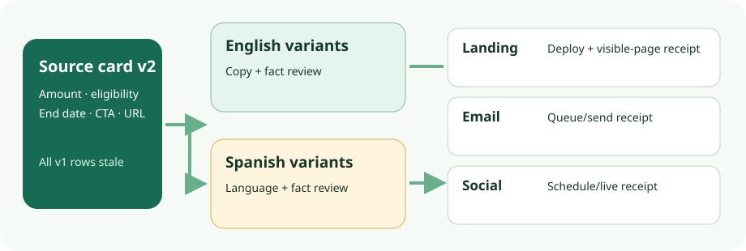

Localized offer release control · 14 Oct 2026 · source/documentation audit
One offer change, two languages, three release gates.
For one Spanish locale and landing page, email and social placements, use an approved English source-copy card plus a bilingual placement register first. A revised offer invalidates the campaign-fact approval of affected old variants. Stop unsent copies, identify what is already live or sent, review the new language and facts separately, then release each exact export through its destination owner. A translation platform cannot make those channel decisions.

Smallest workable route: a bilingual register
Use one source-copy card with the amount, eligibility, end date, CTA wording and destination URL, each diffed on revision. Give every locale-and-placement variant its own immutable export/build ID, content hash, translator, language reviewer, campaign-fact approver, destination owner, actual queue/live/sent receipt, stop authority and correction action. A language-level “approved” flag is not enough; a register without destination receipts cannot answer what is live. This is a proposed operating control, not a Weblate feature.
In the fictional example, OFFER-DEMO-7 changes from v1 “Ten demo credits through 30 November” to v2 “Five demo credits for eligible new teams through 20 November,” with CTA “See eligibility” to an example-domain eligibility page. These are invented terms, not approved commercial claims. The English fact owner approved v2 in this example; no Spanish v2 copy, locale fact review or channel export is approved.
| Placement / locale | Observed example state | Current decision | Owner action and go condition |
|---|---|---|---|
Landing · enLP-EN-build-041 v1 live; 042 v2 staged | v1 is stale; v2 English copy and facts checked. | STOP old / conditional GO v2 | Web owner checks rendered facts, link and build hash, deploys approved 042, verifies visible page, retains v1 receipt and rollback build. |
Landing · esLP-ES-build-019 v1 live; v2 not built | Spanish language and locale facts pending. | STOP v2; correct exposed v1 | Web owner records live URL, screenshot and time; withdraws or visibly corrects stale v1 if it cannot remain accurate. Build v2 only after both reviews. |
Email · enEM-EN-export-008 v1 queued | Stop requested, not confirmed; v2 not exported. | STOP; no go yet | Email owner pauses or cancels queue and returns receipt. If already sent, records send ID, time and audience; correction needs a separate decision. Release v2 only after rendered-export and suppression checks. |
Email · esEM-ES-export-004 v1 draft | Not queued; v2 translation and facts pending. | STOP | Email owner rejects stale draft. Export v2 after both reviews; verify subject, body, links, queue and exact send version. |
Social · enSOC-EN-post-012 v1 scheduled | Stop requested; v2 draft. | STOP until cancellation receipt | Social owner verifies v1 cancellation, checks v2 claims and link, then schedules only the approved post ID. |
Social · esSOC-ES-post-006 v1 live | v2 translation and facts pending. | STOP new post; correct live v1 | Social owner records permalink, post ID and time; removes or visibly corrects under channel policy. Do not relabel history as though v2 had been live. |
Decision rule: each row stays held until its exact version has language review where applicable, independent campaign-fact approval, a verified destination artifact, and a destination-owner receipt. A sent message cannot be silently edited; a live post may need an overt correction. The unconfirmed email stop is an exposure to resolve, not a “go.”
Trace the revised offer without losing the old one
- Version the source.Diff amount, eligibility, date, CTA and URL. Mark all six v1 rows stale for new release, without pretending they changed in the destination.
- Review exact variants.Prepare v2 English and Spanish copy with placement context. Language review checks meaning and tone; a separate fact owner checks the numeric claim, qualification, date, URL and CTA intent in both locales.
- Reconcile artifacts.Where files are repository-managed, record build/export revision and run deterministic checks for missing keys, source version and URL drift. Inspect rendered landing pages and email exports. A passing check is a consistency signal, not a fact approval.
- Release per channel.Web, email and social owners independently match destination receipts to approved artifact IDs. Cancel queues and schedules first; record already-live or sent exposure and the visible correction decision.
Where Weblate can help—and where it stops
Weblate components synchronize supported translation files with repositories. A repo-managed landing page or email template could extract approved strings into PO/POT or a supported keyed format, keeping placement-specific keys and context. Extraction is an external step: the integration guide does not present Weblate as a source-code string extractor. A changed POT does not automatically update bilingual PO files; use the documented msgmerge add-on or a controlled manual update. The PO guide describes previous-source and fuzzy information when the generating workflow preserves it. Neither is a universal stale-offer alarm. Test the actual format and source-update path.
The direct HTML format extracts HTML content, but translated-file edits cannot reliably be imported back; Weblate is the source of truth for that format. This does not establish a round-trip for an arbitrary ESP template with variables. A stored ESP draft and platform social post are not repository components. Build, export, import, queue, deploy and schedule remain external actions.
Translation states and review distinguish needing editing or rewriting, translated/waiting for review and approved. Suggestions stay inside Weblate. State representation in files depends on format; an approval-state change may not rewrite a file. Editing source within Weblate can mark existing targets for attention, but this does not prove every external file edit invalidates every target. Verify stale-target behavior in an isolated two-locale fixture. Useful search filters include state:needs-editing, state:needs-rewriting and state:approved.
Dedicated language review needs Enable reviews plus the reviewer’s Review strings permission. Reviews alone do not prevent unapproved translations entering repository commits; the documented quality filter Only include approved translations is the relevant file-output gate. Even that gate is language review, not approval of an offer or an ESP send. Glossary and automated checks can help consistency but cannot decide commercial correctness. Workflow and quality filters · permissions · checks.
Saving, approving, committing, pushing, merging, exporting and publishing are separate events. Weblate may hold changes before a local VCS commit, commit lazily and push separately if configured. The 2026.10.1 release adds a push-after-translation-commit option; it does not add a channel release gate. Continuous localization · 2026.10.1 notes.
When to add machinery
| Route | Use it when | Boundary to keep |
|---|---|---|
| A · source card + bilingual register | One locale, three mainly channel-native placements. Default here. | Manual reviews, export IDs and destination receipts must be disciplined. |
| B · repo manifest + small checks | Landing and email variants recur and already build from files. | Scripts find stable version/key/URL drift, not incorrect meaning; ESP and social still need explicit export and receipt. |
| C · self-hosted Weblate | More languages, translators and repeated repo-managed strings justify assignment, history, glossary and review operation. | Choose and test format/source update, permissions and approved-only filter; retain register and all destination owners. |
Operation, licence and evidence limits
Self-hosting adds an application, worker, database, cache/datastore, files, credentials, patches and restore duty. The backup guide treats database, VCS files, SSH/GPG keys and user media separately; a project-level archive omits access control and history. The security support policy guarantees fixes only for the latest release, so 2026.10.1 is a dated reference, not a permanent operating pin.
The versioned licence page describes GPL-3.0-or-later for core, with some separately licensed modules and release dependency metadata. That software licence does not grant rights to campaign text or settle translator work. Translation-project licensing is a separate setting. Translation licensing · release artifacts and SBOM. Hosted Weblate is a different operated service with its own access choices; third-party translation or LLM services bring separate data and terms. None was connected here.
GitHub’s release view named Weblate 2026.10.1, dated 9 October, with signed tag weblate-2026.10.1 and linked commit ebfe22d87e58df587f64a110fb520ed772769580. The tag tree, licence blob, signature, artifact and installed behavior were not independently fetched or verified. This is release/documentation evidence, not a tagged-code audit. No locale-specific translation quality, actual offer rights, live channel state, security posture or conversion effect was assessed. Before route C, test a fictional two-locale fixture that exercises source change, stale-state detection, approved-only export, rendering and restore; separately test each destination stop and receipt.